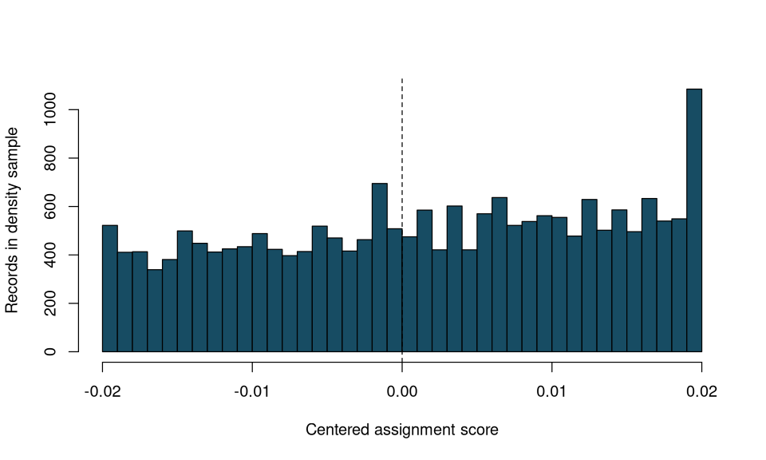
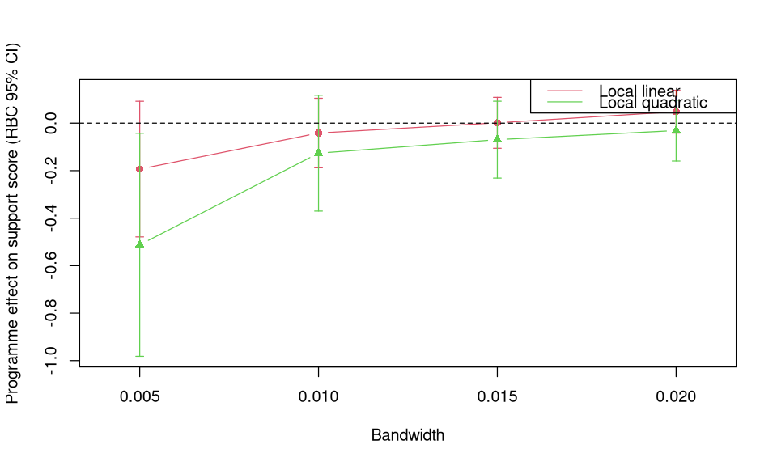

Lab: RDD design diagnostics and sensitivity#
Use the R kernel. Keep the supplied data/ folder beside this notebook. Run cells in order after installing the documented R environment. Data loading is entirely local.
How to use this lab#
Allow 60–75 minutes. You should be comfortable with basic regression and R data frames. Restore the tested environment, then run every cell in order in a fresh kernel. Every run loads and verifies the bundled local data. No data are downloaded. The HTML page displays code; the downloadable notebook executes it.
Learning objectives#
Distinguish the outcome sample from the sample used for density testing.
Evaluate observed-covariate discontinuities without assuming they are baseline measurements.
Audit bandwidth, polynomial, placebo and donut choices.
Report checks as challenges to a design, not a pass/fail certificate.
Research question and design#
Does threshold-based access to Uruguay’s PANES transfer programme change reported support for government? These teaching data come from Manacorda, Miguel and Vigorito and the worked example in The Effect (Manacorda, Miguel, and Vigorito 2011; Huntington-Klein 2025). They are a simplified teaching sample, not a replication of every paper specification.
Component |
Definition |
|---|---|
Running variable |
|
Treatment side |
Below zero; verify against |
Outcome |
|
Population |
Survey observations already restricted to about ±0.02 of the threshold |
Estimand |
Effect of programme access at the threshold, under continuity and no competing discontinuity |
The outcome is a support score, not a binary probability. A change of 0.03 means 0.03 score units, or 3 points on a rescaled 0–100 index; it does not mean a 3-percentage-point change in the probability of supporting government. The programme includes benefits beyond a single cash payment, so interpret the treatment as the programme package.
Complete the foundations lab first.
1. Load both samples#
options(repr.plot.width = 8, repr.plot.height = 4.8)
data_helpers <- c("data/load-data.R", "../data/load-data.R", "docs/labs/data/load-data.R")
data_helpers <- data_helpers[file.exists(data_helpers)]
if (!length(data_helpers)) stop("Extract the complete lab ZIP, including its data folder, before running.")
source(data_helpers[[1]])
options(repr.plot.width = 8, repr.plot.height = 4.8)
# Restore the isolated library documented on the setup page before running.
required <- c("rdrobust", "rddensity", "digest", "jsonlite")
missing <- required[!vapply(required, requireNamespace, logical(1), quietly=TRUE)]
if (length(missing)) stop("Restore the RDD environment; missing: ", paste(missing, collapse=", "))
load_data <- function(name) as.data.frame(qed_data(name))
require_support <- function(x, h, cutoff=0, order=2) {
x <- as.numeric(x) - cutoff
if (!is.finite(h) || h <= 0 || !all(is.finite(x))) stop("Nonfinite score or invalid bandwidth")
for (side in list(x[x < 0 & x > -h], x[x >= 0 & x < h])) {
if (length(side) < 10 || length(unique(side)) < order+2)
stop("Insufficient observations or distinct scores on a cutoff side")
}
invisible(TRUE)
}
rd_fit <- function(y, x, h=NULL, p=1, cutoff=0, treatment=NULL) {
args <- list(y=as.numeric(y), x=as.numeric(x), c=cutoff, p=p, q=p+1,
kernel="triangular", vce="hc0", bwselect="mserd", masspoints="adjust",
stdvars=TRUE, level=95, bwrestrict=TRUE, scaleregul=1)
if (!is.null(h)) {
require_support(x, h, cutoff, p+1)
args$h <- h; args$b <- h
}
if (!is.null(treatment)) args$fuzzy <- as.numeric(treatment)
do.call(rdrobust::rdrobust, args)
}
rd_row <- function(fit, label) {
data.frame(model=label, jump=fit$coef[1,1], bias_corrected=fit$coef[3,1],
se_robust=fit$se[3,1], ci_low=fit$ci[3,1], ci_high=fit$ci[3,2],
h_left=fit$bws[1,1], h_right=fit$bws[1,2],
b_left=fit$bws[2,1], b_right=fit$bws[2,2],
n_left=fit$N_h[1], n_right=fit$N_h[2], row.names=NULL)
}
binned_plot <- function(x, y, width, ylabel, xlabel="Centered assignment score") {
bins <- cut(x, breaks=seq(-width, width, length.out=31), include.lowest=TRUE)
means <- aggregate(cbind(x,y), list(bin=bins), mean)
plot(means$x, means$y, pch=19, col="#174c63", xlab=xlabel, ylab=ylabel)
abline(v=0, lty=2)
invisible(means)
}
print(vapply(required, function(p) as.character(packageVersion(p)), character(1)))
rdrobust rddensity digest jsonlite
"4.0.0" "3.0" "0.6.39" "2.0.0"
options(repr.plot.width = 8, repr.plot.height = 4.8)
gt <- load_data("gov_transfers")
stopifnot(identical(names(gt), c("Income_Centered", "Education", "Age", "Participation", "Support")))
stopifnot(!anyNA(gt[c("Income_Centered", "Participation", "Support")]))
x <- gt$Income_Centered; y <- gt$Support
stopifnot(!any(x == 0), all(gt$Participation == as.integer(x < 0)))
stopifnot(setequal(unique(y), c(0, 0.5, 1)))
print(table(participation=gt$Participation, eligible=x < 0))
print(colSums(is.na(gt)))
print(c(n=nrow(gt), x_min=min(x), x_max=max(x)))
eligible
participation FALSE TRUE
0 821 0
1 0 1127
Income_Centered Education Age Participation Support
0 51 0 0 0
n x_min x_max
1948.00000000 -0.01999099 0.01989200
2. Score distribution and density discontinuity#
Use the dedicated score dataset, not the 1,948-person outcome survey. Retain its observations within ±0.02 for this exercise. Density bandwidths are selected separately from outcome bandwidths.
options(repr.plot.width = 8, repr.plot.height = 4.8)
scores <- load_data("gov_transfers_density")
xd <- scores$Income_Centered
stopifnot(all(is.finite(xd)))
xd <- xd[abs(xd) < 0.02]
require_support(xd, 0.02, order=3)
hist(xd, breaks=seq(-0.02,0.02,length.out=41), col="#174c63",
main="", xlab="Centered assignment score", ylab="Records in density sample")
abline(v=0,lty=2)
density_fit <- rddensity::rddensity(xd, c=0, p=2, q=3, fitselect="unrestricted",
kernel="triangular", vce="jackknife", massPoints=TRUE, regularize=TRUE, bwselect="comb", bino=FALSE)
print(summary(density_fit))
density_results <- data.frame(metric=c("source_n","analysis_n","test_stat","p_value","h_left","h_right"),
value=c(nrow(scores),length(xd),density_fit$test$t_jk,density_fit$test$p_jk,
density_fit$h$left,density_fit$h$right))
print(density_results)
Manipulation testing using local polynomial density estimation.
Number of obs = 20463
Model = unrestricted
Kernel = triangular
BW method = estimated
VCE method = jackknife
c = 0 Left of c Right of c
Number of obs 9077 11386
Eff. Number of obs 1927 2309
Order est. (p) 2 2
Order bias (q) 3 3
BW est. (h) 0.004 0.005
Method T P > |T|
Robust -0.9238 0.3556
Warning message in summary.CJMrddensity(density_fit):
“There are repeated observations. Point estimates and standard errors have been adjusted. Use option massPoints=FALSE to suppress this feature.”
NULL
metric value
1 source_n 5.254900e+04
2 analysis_n 2.046300e+04
3 test_stat -9.237801e-01
4 p_value 3.556008e-01
5 h_left 3.626136e-03
6 h_right 4.531114e-03
{kind=link}

Checkpoint: the full source has 52,549 score records. Explain why surveying outcomes near a threshold could itself alter the observed score distribution. A large density-test p-value is not proof that scores were never manipulated.
3. Observed-covariate checks and missingness#
Examine Age and Education with the same fixed 0.01 window. Use complete cases separately for each variable and report the number excluded. Their measurement timing is not established in the teaching data, so call these observed-covariate checks, not verified pre-treatment balance tests. Household composition and education could themselves be related to programme exposure.
options(repr.plot.width = 8, repr.plot.height = 4.8)
covariates <- do.call(rbind,lapply(c("Age","Education"), function(variable) {
sample <- gt[complete.cases(gt[c("Income_Centered",variable)]),]
row <- rd_row(rd_fit(sample[[variable]],sample$Income_Centered,h=0.01),variable)
row$available_n <- nrow(sample); row$missing_n <- nrow(gt)-nrow(sample)
row
}))
print(covariates)
stopifnot(covariates$missing_n[covariates$model == "Education"] == 51)
Warning message in (function (y, x, c = NULL, fuzzy = NULL, deriv = NULL, p = NULL, :
“Mass points detected in the running variable.”
Warning message in (function (y, x, c = NULL, fuzzy = NULL, deriv = NULL, p = NULL, :
“Mass points detected in the running variable.”
model jump bias_corrected se_robust ci_low ci_high h_left
1 Age 2.15761648 6.5122661 3.1813820 0.2768719 12.747660 0.01
2 Education -0.01733741 0.4453786 0.3899165 -0.3188438 1.209601 0.01
h_right b_left b_right n_left n_right available_n missing_n
1 0.01 0.01 0.01 537 400 1948 0
2 0.01 0.01 0.01 521 388 1897 51
Explain any discontinuity rather than adding the variable mechanically as a control. Multiple noisy checks can produce isolated findings by chance; a common-sample comparison would also be needed to distinguish adjustment from sample changes.
4. Bandwidth and polynomial sensitivity#
Use triangular kernels, b=h, and paired orders (p,q)=(1,2) and (2,3). Every estimate uses the same outcome definition. Draw intervals around the bias-corrected programme effect, not around the conventional jump.
options(repr.plot.width = 8, repr.plot.height = 4.8)
rows <- list()
for (h in c(0.005,0.01,0.015,0.02)) for (p in c(1,2)) {
row <- rd_row(rd_fit(y,x,h=h,p=p),sprintf("h%.3f_p%d",h,p))
row$bandwidth <- h; row$order <- p
rows[[length(rows)+1]] <- row
}
sensitivity <- do.call(rbind,rows)
print(sensitivity)
plot(NA,xlim=c(0.004,0.021),ylim=range(-sensitivity$ci_high,-sensitivity$ci_low),
xlab="Bandwidth",ylab="Programme effect on support score (RBC 95% CI)")
for (p in c(1,2)) {
s <- sensitivity[sensitivity$order == p,]
lines(s$bandwidth,-s$bias_corrected,type="b",pch=15+p,col=p+1)
arrows(s$bandwidth,-s$ci_high,s$bandwidth,-s$ci_low,angle=90,code=3,length=.04,col=p+1)
}
abline(h=0,lty=2);legend("topright",legend=c("Local linear","Local quadratic"),col=2:3,lty=1)
Warning message in (function (y, x, c = NULL, fuzzy = NULL, deriv = NULL, p = NULL, :
“Mass points detected in the running variable.”
Warning message in (function (y, x, c = NULL, fuzzy = NULL, deriv = NULL, p = NULL, :
“Mass points detected in the running variable.”
Warning message in (function (y, x, c = NULL, fuzzy = NULL, deriv = NULL, p = NULL, :
“Mass points detected in the running variable.”
Warning message in (function (y, x, c = NULL, fuzzy = NULL, deriv = NULL, p = NULL, :
“Mass points detected in the running variable.”
Warning message in (function (y, x, c = NULL, fuzzy = NULL, deriv = NULL, p = NULL, :
“Mass points detected in the running variable.”
Warning message in (function (y, x, c = NULL, fuzzy = NULL, deriv = NULL, p = NULL, :
“Mass points detected in the running variable.”
Warning message in (function (y, x, c = NULL, fuzzy = NULL, deriv = NULL, p = NULL, :
“Mass points detected in the running variable.”
Warning message in (function (y, x, c = NULL, fuzzy = NULL, deriv = NULL, p = NULL, :
“Mass points detected in the running variable.”
model jump bias_corrected se_robust ci_low ci_high
1 h0.005_p1 0.027155293 0.193333153 0.14570743 -0.09224816 0.47891447
2 h0.005_p2 0.193333153 0.512282946 0.23956466 0.04274484 0.98182105
3 h0.010_p1 -0.033481754 0.041604922 0.07467437 -0.10475415 0.18796400
4 h0.010_p2 0.041604922 0.126452743 0.12438708 -0.11734145 0.37024693
5 h0.015_p1 -0.079741327 -0.001371794 0.05470766 -0.10859683 0.10585324
6 h0.015_p2 -0.001371794 0.069470920 0.08255866 -0.09234109 0.23128293
7 h0.020_p1 -0.095852696 -0.048293140 0.04604897 -0.13854746 0.04196119
8 h0.020_p2 -0.048293140 0.031228335 0.06536512 -0.09688495 0.15934162
h_left h_right b_left b_right n_left n_right bandwidth order
1 0.005 0.005 0.005 0.005 276 186 0.005 1
2 0.005 0.005 0.005 0.005 276 186 0.005 2
3 0.010 0.010 0.010 0.010 537 400 0.010 1
4 0.010 0.010 0.010 0.010 537 400 0.010 2
5 0.015 0.015 0.015 0.015 827 598 0.015 1
6 0.015 0.015 0.015 0.015 827 598 0.015 2
7 0.020 0.020 0.020 0.020 1127 821 0.020 1
8 0.020 0.020 0.020 0.020 1127 821 0.020 2
{kind=link}

The source is already truncated to approximately ±0.02. A result at the widest available window is not an estimate using the full programme population. Changing plot bins would be a different exercise from changing these estimation windows.
5. Placebo thresholds and donut exclusions#
Use artificial cutoffs at −0.01 and +0.01, each with a 0.004 estimation and bias bandwidth. Neither window crosses the genuine zero cutoff. Then, at the real cutoff, remove score distances below 0.001 and 0.002 while keeping h=b=0.01. Donut results rely on extrapolation across the excluded gap; their intervals are model-based sensitivity summaries, not a repair for sorting or proof of validity.
options(repr.plot.width = 8, repr.plot.height = 4.8)
placebos <- do.call(rbind,lapply(c(-0.01,0.01),function(cutoff) {
h <- 0.004;stopifnot(abs(cutoff)>h)
same_regime <- if (cutoff < 0) x < 0 else x > 0
row <- rd_row(rd_fit(y[same_regime],x[same_regime],h=h,cutoff=cutoff),paste0("cutoff_",cutoff))
row$cutoff <- cutoff;row
}))
print(placebos)
donuts <- do.call(rbind,lapply(c(0,0.001,0.002),function(radius) {
keep <- abs(x) >= radius
row <- rd_row(rd_fit(y[keep],x[keep],h=0.01),sprintf("donut_%.3f",radius))
row$radius <- radius;row$removed_n <- sum(!keep);row
}))
print(donuts)
Warning message in (function (y, x, c = NULL, fuzzy = NULL, deriv = NULL, p = NULL, :
“Mass points detected in the running variable.”
Warning message in (function (y, x, c = NULL, fuzzy = NULL, deriv = NULL, p = NULL, :
“Mass points detected in the running variable.”
model jump bias_corrected se_robust ci_low ci_high
1 cutoff_-0.01 0.04772398 -0.01419843 0.07881574 -0.1686745 0.14027759
2 cutoff_0.01 -0.10370479 -0.20122565 0.13220029 -0.4603334 0.05788215
h_left h_right b_left b_right n_left n_right cutoff
1 0.004 0.004 0.004 0.004 225 207 -0.01
2 0.004 0.004 0.004 0.004 173 161 0.01
Warning message in (function (y, x, c = NULL, fuzzy = NULL, deriv = NULL, p = NULL, :
“Mass points detected in the running variable.”
Warning message in (function (y, x, c = NULL, fuzzy = NULL, deriv = NULL, p = NULL, :
“Mass points detected in the running variable.”
Warning message in (function (y, x, c = NULL, fuzzy = NULL, deriv = NULL, p = NULL, :
“Mass points detected in the running variable.”
model jump bias_corrected se_robust ci_low ci_high h_left
1 donut_0.000 -0.03348175 0.04160492 0.07467437 -0.1047542 0.1879640 0.01
2 donut_0.001 -0.06193779 0.05549678 0.09945454 -0.1394305 0.2504241 0.01
3 donut_0.002 -0.11516374 -0.05451387 0.16150670 -0.3710612 0.2620335 0.01
h_right b_left b_right n_left n_right radius removed_n
1 0.01 0.01 0.01 537 400 0.000 0
2 0.01 0.01 0.01 521 362 0.001 54
3 0.01 0.01 0.01 443 327 0.002 167
6. Design assessment and worked checkpoints#
The density exercise keeps 20,463 of 52,549 records. Its jackknife statistic is −0.923780049 (p=0.355600845); this does not establish absence of manipulation. The observed-age bias-corrected jump is 6.5123 years, with interval [0.2769, 12.7477]. Investigate this finding and measurement timing; do not declare baseline balance verified. Education uses 1,897 complete cases, of which 521 below and 388 above zero fall inside the 0.01 window.
At bandwidths 0.005, 0.01, 0.015 and 0.02, the conventional local linear programme effects are −0.02716, +0.03348, +0.07974 and +0.09585. The sensitivity plot uses bias-corrected estimates instead, so its centers differ from this list. The narrow quadratic fit is especially unstable. Donut radii 0.001 and 0.002 remove 54 and 167 outcome-survey records. Record these changes alongside the estimates in your diagnostic table.
See the reproduction record for verified outputs and the complete comparison tables.
Write a short assessment covering: the administrative allocation rule; what density and covariate checks do and do not establish; stability across windows and fits; and which uncertainty matters for the policy conclusion. Do not choose a result by significance, or describe every nonsignificant diagnostic as a successful validation.
Next, study fuzzy RD and local IV.
Huntington-Klein, Nick. 2025. “The Effect: An Introduction to Research Design and Causality. Chapter 20: Regression Discontinuity.” 2025. https://portal.heley.uk/researchlibrary/books/the-effect.
Manacorda, Marco, Edward Miguel, and Andrea Vigorito. 2011. “Government Transfers and Political Support.” American Economic Journal: Applied Economics 3 (3): 1–28. https://doi.org/10.1257/app.3.3.1.